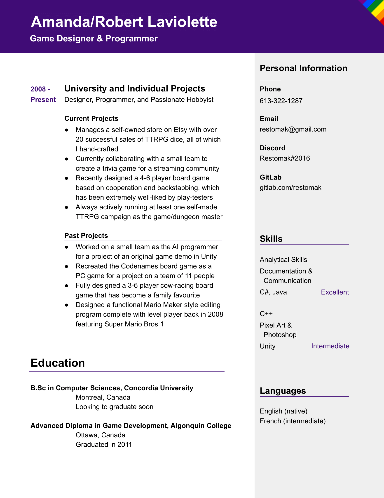
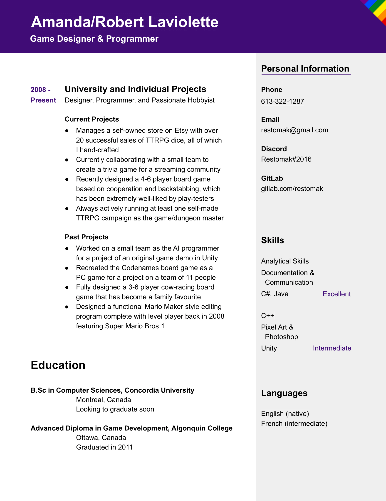

Hello! I'm a genderfluid & trans game designer who specializes in programming! I've been designing games for almost my entire life, and I'm super passionate about it and my hobbies. Read more about me and my projects below!
My goal in game design is to spread enjoyment and fun, to help people unwind and relax, and maybe forget the negative things in their lives for a little while. I want to make people smile and have a good time.
I’ve spent my entire life as a game designer and the greater part of my life as a programmer. I’ve spent so long with both in my life, in fact, that I’ve been calling myself a game designer since long before I realized I’m trans and genderfluid. Now, I’m as much a part of the LGBTQIA+ community as I am a game designer and D&D dungeon master. I also make and sell handmade resin dice, and I develop and moderate for the web browser game Mafia.gg
I’ve been a game designer since I was in first grade. My parents love to tell the story about how I came home from school one day with a board game I’d made in class, and how it changed my life forever. I was so excited to have them play it that they simply couldn’t say no, and so in short order we were playing Gingerbread Escape, a game about a freshly-baked gingerbread man trying to make his escape out of the kitchen without being caught by the dog. It was a simple game, with elements from both Snakes and Ladders as well as Candyland (two of my favourite games at the time), and inspired simply by my mother’s gingerbread cookies and our dog who’d charge into the kitchen and gobble up anything we’d accidentally dropped.
When my parents tell this story, they love to mention that they were expecting just to humor an excited first-grader for an hour, spending time as a family, before just moving on-- and that unexpectedly, they ended up having a great time playing! My dad states that later, I revealed to them that when I grew up I wanted to make games. He asked me why, and my answer to him was my mission statement (albeit from a first-grader’s vocabulary). Both my desire to make games and the reason for it have not changed in all those years; game design is my dream.
As luck would have it, I was given the option in grade 9 to take a mixed shop & tech class. I enjoyed the workshop half of the class but only with mild curiosity when compared to how much I enjoyed the tech half of it; we were taught my first ever programming language: Object Oriented Turing (OOT).
I hyper-fixated on OOT with a passion paralleling only my interests in both making and playing games. I quickly learned that I could make games using it, and the first “game” I ever made and programmed was a little Mario platformer with rigid physics that took place all on one screen-- everything was tiny, but I loved it.
In grade 10, I disassembled a simple side-scrolling space game that came with the OOT language disk. My best friend and I were so ahead of the class that the teacher let us do whatever we wanted, and so I delved through the source code in class, learned how they implemented side-scrolling, and put it to use in my new creation. It wasn’t perfect; the physics were still very rigid, and the graphics and sound effects were shamelessly grabbed from online. However, what I’d managed to create was a dirty replication of the first four levels of SMB1, side-scrolling included. My friends and I were ecstatic.
OOT became my focus for a long time. I was too far ahead of the class for the teacher to help, and I didn’t have another programming course for another 4-5 years, so all of my programming knowledge for years was self-taught. I would take apart more programs that came with the disk and I’d spend hours reading through the help manual to learn new functions. I made a great many games, many of which were never finished; I’d get bored and put most of them aside as soon as I learned how to make them. Some of the games, however, I put a little more work into. These were the games that followed my mission statement, rather than just being made as tools to help me learn more programming: Platform Dance, Brick-a-Block (in its earliest form), Super Mario Bros Custom, and a text-based adventure that eventually instead became a pen and paper adventure, marking my first steps into being a dungeon master (DM) for D&D games.
My first ever pen-and-paper adventure was a mess. My brother was the only one to ever fully play through it, and although it’s where I got the namesake Restomak, nothing else about it is worth mentioning. However, I had been introduced to the concept of D&D, and while I didn’t dive into it immediately, it would be something I picked up with great passion later on in my life.
The first real D&D adventure I ever DMed was for my brother and two cousins. A small mining town had their mines overrun with goblins and hobgoblins, and they were hired to investigate. After a bit of fighting down in the mines, the party resurfaced to recuperate, and the rogue (played by my brother) discovered the mayor had his hands in the goblin problem of the mines. A master of disguise, he single-handedly caused a riot in town forcing the mayor to retreat into his mansion. The town was on their side, now, and they were more prepared than ever before to delve back into the mines and wipe out the problem once and for all. They succeeded, however my younger cousin’s character (a fighter) died in the final battle. He was given a proper burial, a heroic tale was told about his death, and the adventure came to a close with all the loose ends wrapped up neatly. All three players were hooked and wanted more adventure-- something I gave them not too long later with a larger party, and in it their characters (years into the future) were told the now-exaggerated tale of my younger cousin’s character’s death. They loved it.
The spark and energy I feel when DMing games of D&D is the same as how I feel when making games, and this feeling is amplified exponentially when I DM for newer players. Few things compare to making players fall in love with a game, especially knowing how much of a hand you had in that process. For new players, it’s especially important to reassure them that there’s no harm in trying things, that there’s no stupid questions, that there’s nothing I’d love more than to be patient and help them learn the game. I strongly believe this reasoning can be applied to introductory levels of video games; a properly-designed tutorial level (or introductory campaign, in D&D’s case) can make the difference in whether a player gets attached to a game or puts it down immediately.
To this day I continue to DM, usually juggling two different campaigns simultaneously (one usually for beginners). Sitting at my desk or lounging somewhere with my tablet, pouring over my notes and scheming new events, drizzling foreshadowing all over current ones and tying all the stories together in a big homebrew universe, is one of my absolute favourite pastimes.
Put bluntly, I fucking love creating stuff for people.
After a few years at Algonquin College and achieving my Advanced Diploma for Game Development, I’d spent a bunch of time working on some of my own projects-- but never really pushed to get into the field of game design professionally. I felt something was missing, though I wasn’t sure what that was. In the meantime, I instead worked a lot on one of my personal projects I’d grown pretty attached to: Extreme Cow Racing and Brick-a-Block. Brick-a-Block was a game I’d made many years back, and with the help of my brother (who I’d taught programming) and my cousin (who was in college as a graphic designer), the game was vastly improved. However, attrition eventually hit us: my cousin found a job, my brother started college, and I-- looking to more easily move to the US (my girlfriend at the time was American)-- began taking courses at Concordia University in order to get a degree in Computer Science.
Away from family and friends and taking full-time courses, many of which felt extremely redundant to me (zero of my college courses counted as credits), I succumbed to depression. As this was an extremely difficult time in my life, I will gloss over it. However, while at University, I not only learned a great deal of new programming knowledge and tricks (such as the importance of time and space complexity), I learned possibly the single most important thing I could: the existence of gender identities outside of the binary.
Discovering I was trans and genderfluid was like turning on the lights for the first time after spending my entire life living in a set of pitch-black rooms. Problems and weird feelings I’d been bumping into all my life-- things I knew were there but never quite knew what they were-- were suddenly crystal clear to me. For the first time, I knew what was missing before I went out into professional life: knowing how I wanted to be me. It was suddenly easier to seek out help, to do everyday tasks, to get my work done, to simply feel happier. It has changed my life, and finally I feel more able to move forward.
Returning to live once again with family due safety reasons with the COVID-19 pandemic, I finally put in some work towards professional life. I reached out to an acquaintance of an acquaintance: one of the lead developers for the web browser game Mafia.gg, and told him I wasn’t sure if the team was looking to accept new members, but that I was interested and would love to work on the game with them.
After a successful interview and an introduction to the team (several of whom I was already acquainted with), I began learning their source code, and with the help of another team member, put forward my first addition to the game: two new roles, one of which was an immediate and huge hit with the community. Confidence bolstered, I’ve since added more to the game. I’ve added vote quoting, a feature long-desired by the community; I’ve created and implemented many new roles; I’ve added flavour text to pre-existing roles and worked with the team in the creation of our new FAQ, making the game friendlier to newer players; and more, including an April Fool’s day event item that has the community to this day impatient for its return.
Today, I continue to add more to the game. I now host popular event games for the community, and I'm regularly designing new roles and quality of life features. I've recently created a new Ready Check feature to give hosts more control over their lobbies before they begin a game!
Mafia.gg isn’t the only thing I’ve been working on since the beginning of the pandemic; I’ve also begun the hobby of creating handmade resin dice sets, and I sell them in my shop on Etsy. As this is all run by myself, in addition to the actual making of the dice, I am also responsible for marketing as well as communication with customers to make sure everything is made to their liking. I’ve successfully made 20 sales so far (14 on Etsy), and have managed to maintain a 5-star rating!
As mentioned in the beginning, however, workshop-style creation passion pales in comparison to the passion I have for making games. As such, I’ve been working on several new projects, including having created a new board game! With the working title Greedy Wizards, it’s already through seven rounds of playtesting (several have had groups that had no prior knowledge of the game nor input from me-- I was there as an observer only), and so far everyone who’s played it has loved it! While my other projects aren't yet ready to be shown to the public, I'm hard at work nearly every day refining my game design, programming, and storytelling skills.
With my life on track, it’s time for me to begin a new chapter in my life: with my passion for game design, professionally.
There's work to be done!
 
